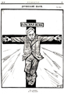
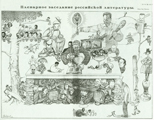
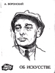
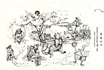
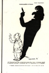
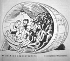
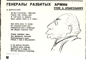

|  |
"Ecce homo." Cartoon drawn by Deni depicting Voronsky on cross, under attack by arrows labelled with the names: Tarasov-Rodionov, Rodov, Lelevich and Volin. 1923. |
|  |
"Plenary Session of Russian Literature." Cartoon drawn by Boris Efimov in 1923. Published in "Prozhektor," No. 10, 31 May 1924. Voronsky at center of table, before an issue of "Krasnaia nov," with his arms encircling writers from "Krug". |
|  |
Voronsky as drawn by Deni for cover of pamphlet, "On Art," 1925. |
|  |
Cartoon drawn by Kukryniksy, "Pushkin in the Images of 1927," NLP, 1927, 5 February, # 3, p. 74. Voronsky as the cat chained to the oak tree. |
 |
Cartoon by N. Gatilov, "A. K. Voronsky," Vecherniaia Moskva, 1927, 26 February, #47 (958), p. 3. Voronsky in military uniform. |
|  |
Cartoon drawn by Kukryniksi, suggesting that Polonsky’s literary views had always been a shadow of the opinions held by Voronsky and Trotsky. "Na literaturnom postu," |
|  |
Cartoon of Voronsky in barrel labeled "Izd-vo Krug" [Circle Publishing House], by P. Lebedev in "Chitatel’ i pisatel’, 1928, № 19 (May 12), page 9. |
 |
"Humane kasha." Cartoon of Voronsky, Gorbov, Lezhnev and other Perevalists, drawn by Kukryniksy, "Na literaturnom postu," 1930, # 5-6, p.123. |
|  |
"General of Shattered Armies," (Poem by A. Arkhangelsky, cartoon by Kukryniksy), Na literaturnom postu, 1931, #1, p. 12. |
 |
"Voronsky - Fiction Writer," (Poem by Alarikus, cartoon by Kukryniksy), Na literaturnom postu, 1931, #15, p. 43. |